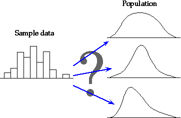

Shape of a probability density function
A probability density function (i.e. population histogram) can have any shape, though it is usually a fairly smooth curve. Indeed, we often have only rough information about its likely shape from a single sample histogram.

Normal distributions
One family of symmetric continuous probability density functions called normal distributions is particularly useful. The normal distribution is often used to model data that is approximately symmetric and bell-shaped (although sometimes the approximation is poor).
The shape of the normal distribution depends on two numerical values, called parameters, that can be adjusted to give a range of symmetric distributional shapes. The two normal parameters are called µ and σ and are the distribution's mean and standard deviation.
Shape of the normal family of distributions
Use the two sliders to adjust the normal parameters. Observe that the location and spread of the distribution are changed, but other aspects of its shape remain the same for all values of the parameters.
Note also that the total area under the probability density function remains the same (exactly 1.0) for all values of the parameters. This holds for all probability density functions.
Normal distribution as a model for data
A normal distribution is sometimes used as a population to model the variability in a data set. (The data are assumed to be a random sample from this population.) On the basis of a single set of data, there is rarely enough information about the shape of the underlying distribution to be sure that a normal distribution is the 'correct' population, but it is often a close enough approximation.
Job satisfaction ratings
Merchandise buyers are critically important to the success or failure of retail ventures, both through negotiations over pricing and decisions about the types of product that will be stocked. Because of high turnover of staff in this area (estimated to be over 25 percent per year), research was carried out to determine the factors related to turnover.
The diagram below shows job satisfaction ratings of a sample of buyers on a scale of 0 (worst) to 30 (best), with a superimposed normal probability density function.
Use the sliders to adjust the normal parameters to obtain as close as possible a match to the histogram. This normal distribution can be used as an approximate model for how the data might have arisen.
We have used a subjective procedure of matching the shapes of the histogram and probability density 'by eye'. A more objective way to 'estimate' the normal parameters will be presented in the next chapter. Click the button Best fit to apply this objective method.
Many data sets cannot be modelled by a normal distribution. A normal distribution would not be an appropriate model for ...
For some data sets with skew distributions, the logarithms of the values have a more symmetric distribution. A normal distribution may be a reasonable model for the transformed data.
Do not assume that all data sets that you meet can be modelled adequately by normal distributions.
Normal distributions describe many summary statistics
A more important reason for the importance of the normal distribution in statistics is that...
Many summary statistics have normal distributions (at least approximately).
In the next chapter, we will show that the mean of a random sample has a distribution that is close to normal when the sample size is moderate or large, irrespective of the shape of the distribution of the individual values.
In a similar way, the distributions of the following summary statistics are approximately normal when sample size is moderate or large...
Since most statistical methods require an understanding of the variability of such summary statistics, it is important that you become familiar with the properties of normal distributions.